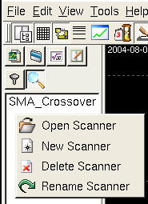
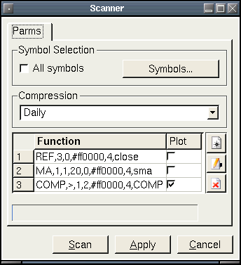

Scanner Panel
The scanner tab allows you scan symbols using a user defined
formula. All the symbols that meet the criteria of the scan are put
into chart group. The chart group will use the same name as the scan
name, and be located as a folder under the "Scanner" group.

 Open Scanner
Open Scanner
This will load and display the selected scanner in the scanner
dialog.
 New Scanner
New Scanner
Here you can create a new scanner. Selecting this will bring up a
series of dialogs. First you are asked for a name to call your new
scanner. The name must be unique, if not an error message will
display. After that, the scanner dialog will appear.
 Delete Scanner
Delete Scanner
Deletes the selected scanner.
 Rename Scanner
Rename Scanner
This brings up a dialog that allows you to enter the new name of the
selected scanner.
Scanner Dialog

The "Scan" button will perform the scan. The "Apply" button will save
the scan rule.
Symbol Selection: Checking the "All symbols" box will choose all
symbols in the qtstalker database for scanning. Pressing the symbols
button will bring up a file selector dialog that allows you to choose a
specific group of symbols.
Compression: The compression to use when scanning symbols. ie. Daily,
Weekly, Monthly.
Scanner Formula: This is where we enter the formula to scan symbols
with. Here the above shot is using a simple SMA crossover formula. Here
is a breakdown of the formula.
1. REF function grabs an array of close bars.
2. MA function creates a 20 period SMA with step 1 as the input.
3. COMP function that compares step 1 with step 2. If step 1 is greater
than step 2, than a TRUE result is returned and the symbol being
scanned will be put into the scan group.
**CRITICAL**
In order for this formula to work, you must have a COMP step somewhere
in the formula to generate the boolean array that will generate the
scan logic. Note also that the only step that is checked in the plot
column must be the COMP step. The checked step is the one that tells
qtstalker which step contains the logic for selecting symbols. If a non
COMP step or multiple steps are checked, the results will be unreliable.